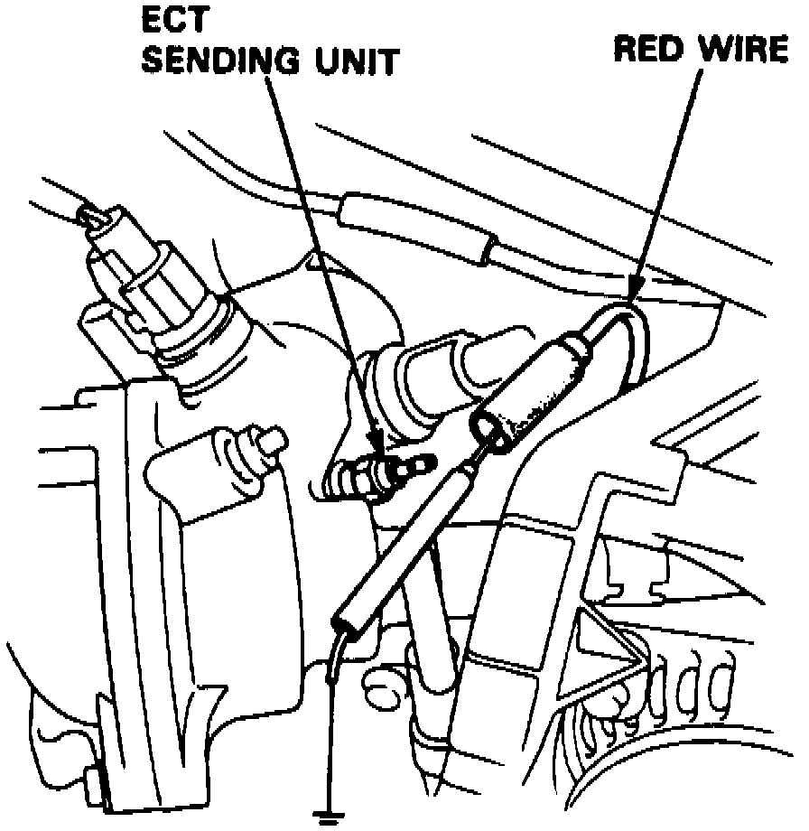

Temperature Gauge: Testing and Inspection
1. Check No. 1 (10A) fuse in underdash fuse/relay box before testing.Fig. 4 Engine Coolant Temperature Unit:

2. Ensure ignition switch is in Off position, then disconnect red wire from coolant temperature sending unit and ground it with a jumper wire, Fig. 4.
3. Turn ignition switch On.
4. Ensure pointer of coolant temperature gauge starts moving toward H mark. Turn ignition switch Off before pointer reaches H mark on gauge dial. Failure to do so may damage gauge.
5. If pointer of gauge does not swing, check the following:
a. Blown fuse in underdash fuse/relay box.
b. Open in yellow/green wire or red wire.
c. If fuse and wiring are satisfactory, replace coolant temperature gauge.
6. If gauge is satisfactory, inspect sending unit.